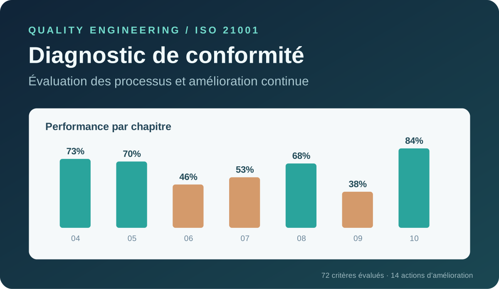

Audit · ISO 21001 · Ishikawa 5M · PDCA · KPI
Diagnostic qualité ISO 21001
Diagnostic du système de management de la qualité d’une école d’ingénieurs : évaluation de la conformité, analyse des causes et plan d’amélioration chiffré.
- 72 critères évalués sur les 7 chapitres d’exigences
- 15 causes analysées, 14 actions avec responsable, délai et KPI
- Priorité identifiée : planification (46 % de conformité)